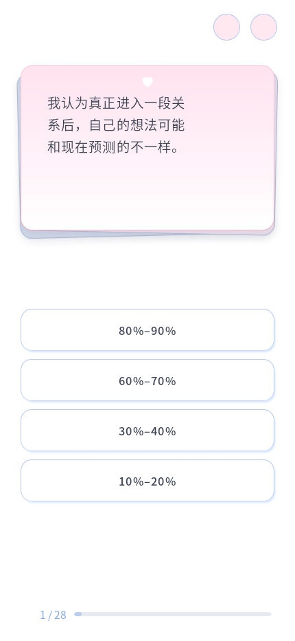
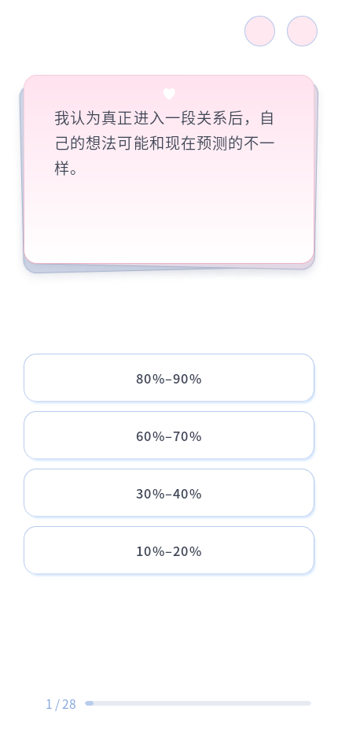

移除末行字数检测、Range 逐字测量、字体签名缓存与 has-short-last-line 类名，不再使用 balance 或 pretty。所有浏览器统一 text-wrap: wrap，按文字区域的实际可用空间换行，允许末行自然保留一两个字。
原 87.4% 内宽、22em 最大宽度、左对齐、字重字号和边距保留。严格标点与简短数字／拉丁字母组合保护保留，普通中文不强制整词换行。题目原文未修改。


10 个视口、全部 96 题共 960 组通过：统一自然换行、文字完整、左对齐、无重叠、进度可达、重复 resize 稳定；换题动画正常。200% 字体下 C10、C24、C02、A21、D02 阅读通过，相关 Node 测试 2/2。题库、共享 CSS、HTML 与答题控制器哈希未变。